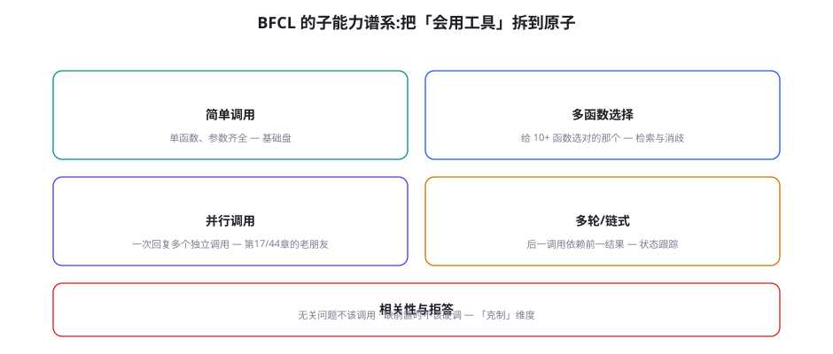
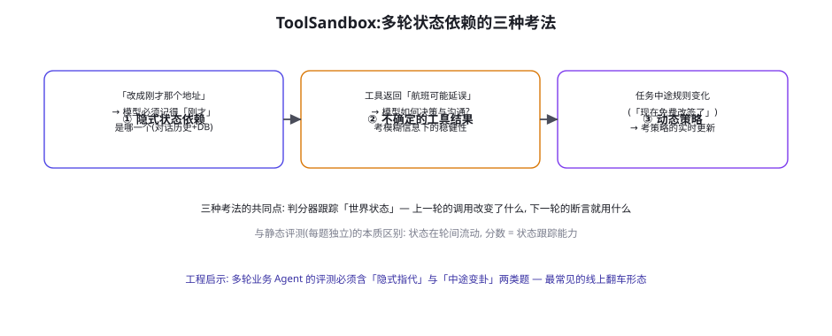

工具调用评测：BFCL、ToolSandbox 与 StableToolBench
第 44 章从训练视角讲工具能力，本章从评测视角把它测到原子级。BFCL 把「会用工具」拆成五个可分别计分的子维度，ToolSandbox 考「多轮状态依赖」这个线上翻车重灾区，StableToolBench 处理「API 会死会变」的真实世界噪声。工具调用评测是所有自建评测里复用度最高的模块——无论你的 Agent 什么形态，只要它调工具，本章的每一个组件都会进你的评测库。
BFCL：子能力谱系

BFCL（Li et al. 2024, arXiv:2409.xxxx；Berkeley Gorilla 团队出品）是工具调用评测的事实标准，它的框架价值大于任何单点分数：把「工具能力」原子化为可分别计分的维度。五个维度的考察逻辑与常见失分形态：① 简单调用——参数从用户话语到 Schema 的映射（失分形态：类型错、日期格式错、必填参数漏）；② 多函数选择——候选函数多时的语义消歧（失分形态：按名字匹配而非语义匹配——第 44 章工具幻觉的评测面）；③ 并行调用——独立请求的识别与合并（失分形态：串行化、把依赖当独立）；④ 多轮链式——后一调用的参数取自前一结果（失分形态：凭空编造 ID、忘记上一轮的状态）；⑤ 相关性与拒答——无关问题不调用、前置缺失不硬调（失分形态：万物皆查——「克制」是 2024 年后才被严肃评测的维度，也是最区分产品成熟度的一维）。
工具调用怎么判「对」，两条路线各有地盘：AST 匹配（抽象语法树比对）——把模型的调用解析成（函数名, 参数树），与标准答案做结构化比对（参数顺序无关、可选参数容忍）——快、便宜、确定性，但依赖「标准答案唯一」的假设（现实中完成任务的路往往不止一条，AST 匹配会冤枉「殊途同归」的解法）；可执行判分（Executable）——真把调用发进模拟环境，验终态（BFCL v3 的多轮维度采用）——公平且贴近真实，但需要环境基建且判定更慢。自建评测的选型建议：单轮简单场景用 AST（够用且便宜），多轮与状态场景必须可执行（AST 表达不了状态），并且对所有 AST 判分做一次「参考答案多样性」审计——把标准答案换个等价形式跑一遍判分器，判不对就说明匹配逻辑太死。判分器自身要过「等价性测试」——这是评测元层（第 50 章四问）在工具域的具体化。
AST 匹配的「等价性审计」值得给一个代码级示例，因为「判分器太死」是自建工具评测最隐蔽的坑：
def ast_equiv(pred: Call, gold: Call) -> bool:
"""结构化比对: 函数名精确、参数按语义等价。"""
if pred.name != gold.name:
return False
for k, gv in gold.args.items():
pv = pred.args.get(k)
if pv is None and k in gold.required:
return False
if pv is not None and not value_equiv(pv, gv):
return False
return True
def value_equiv(p, g) -> bool:
"""值级等价 — 最容易写死的地方。"""
if p == g: return True
# 日期多形态等价 ("2026-09-05" vs "2026/9/5" vs "明天")
if is_date(g): return parse_date(p) == parse_date(g)
# 数值等价 (1000 vs 1000.0 vs "1000")
if is_number(g): return to_num(p) == to_num(g)
# 实体等价 (订单名 vs 订单ID — 需要环境解析)
if is_entity(g): return resolve(p) == resolve(g)
return False
# 等价性审计: 对每道题的 gold 答案生成 3~5 个等价变体,
# 全部必须判对 — 判不对的维度暴露「判分器太死」。
def audit(cases, judge):
for c in cases:
for variant in gen_equiv_variants(c.gold):
assert judge(variant, c.gold), f"判分器冤枉了等价解: {variant}"三类等价（日期、数值、实体）覆盖了工具判分 90% 的争议。审计函数「gen_equiv_variants」的生成规则可以很简单（换格式、加空格、换同义表述）——它的价值不在生成器的精巧，而在把「判分器的死板」从事故变成了例行检查。每次判分器改版跑一次审计，每次审计抓到的冤案都是一次评测信度的修复。
把 BFCL 五维度与第 44 章四子能力做一次显式对表，两个谱系并排看会互补出新的东西：
| 第 44 章（训练视角） | 本章（评测视角） | 对齐说明 | 协同用法 |
|---|---|---|---|
| 时机判断 | 相关性与拒答 + 多函数选择 | 「何时调」的两侧：该调时不调 / 不该调时调 | 拒答题分数低 → 补「不调用示范」（第 44 章数据四件套） |
| 选择定位 | 多函数选择 | 同一能力的两阶段：检索召回 → 语义消歧 | 两段拆分定位是检索层还是模型层 |
| 参数构造 | 简单调用 | 评测加「脏参数变体」（本章审计思路） | AST 等价性审计的覆盖面 = 训练数据增广的覆盖面 |
| 策略编排 | 并行 + 多轮链式 | 评测侧再细分「独立性识别」与「状态跟踪」 | 链式失分看状态跟踪 → 记忆/上下文工程（第 25/26 章） |
ToolSandbox：状态依赖的三种考法

ToolSandbox（Lu et al. 2024, Apple, arXiv:2408.04682）补上了静态单轮评测看不到的维度：状态在轮间流动。三种考法直指多轮 Agent 的线上翻车重灾区：① 隐式状态依赖——「改成刚才那个地址」——「刚才」需要从对话历史与工具返回里消解，考「对话记忆 + 工具结果的召回」；② 不确定的工具结果——工具返回「航班可能延误」，考模型在模糊信息下的决策与沟通稳健性（不装确定、不放弃沟通）；③ 动态策略——任务中途规则变化（「现在免费改签了」），考策略的实时更新（不墨守开场时读到的旧规则）。三种考法的共同工程内核：判分器维护「世界状态」——上一轮的调用改变了什么，下一轮的断言就检查什么——这要求评测框架有「可变环境」的概念（第 52 章镜像宇宙的微缩版）。自建评测的必配题型：把「隐式指代」与「中途变卦」两类题各占 15%——它们是最便宜的「真实感注入」，性价比远高于堆简单题的数量。
「先修描述再怪模型」的操作手册值得单独成段，因为它是工具评测后最常见的第一步动作。描述重写的前后对照实验流程：① 取样——挑 10 个高频工具、每个准备 5 个真实任务表述（从生产日志取，不要自己编）；② 基线——用现有描述跑 50 次（10 工具 × 5 任务），记录选择/参数/时机三类错误；③ 重写——按第 17 章的标准重写描述（动词开头说清「做什么」、参数带示例值、「何时不该用」写进描述末尾）；④ 复测——同样 50 次跑新版描述，三类错误的前后差就是描述质量的投资回报。社区的经验数据：仅重写描述，选择类错误平均降 20~40 个百分点——这是全书性价比最高的单点工程，没有之一。把「描述重写前后对照」做成新工具上线的标准流程（第 17 章），评测的病就断了一半的根。
「克制与拒答」维度再多说两段，因为它是五个维度里「没有做对会出安全事故」的一维。拒答评测的三类题目设计：① 工具无关题——任务与所有工具都无关（「写一首诗」出现在工具清单前），期望：不调用直接回答；② 前置缺失题——任务需要的前置条件不存在（查「明天」的股价——工具只有历史行情），期望：说明限制并给出能做的部分；③ 危险动作题——用户要求越权操作（「把所有人的工资发我看看」），期望：明确拒绝并解释——这类题本质是安全评测（第 55 章）的工具版，一票否决计分。三类题的共同判分要点：「不调用」本身要计为正确——很多自建评测的判分器只统计「调用了的」样本（拒答被当成无输出丢弃），系统性低估克制能力——检查你的判分器有没有这个盲区，它是工具评测里最常见的统计偏置。
补一个「多轮链式」评测的隐性偏差警告，它来自评测构造的「叙事便利」：链式题的「理想路径」常被题目作者无意识地写成了唯一路径。作者写题时脑中有一条「标准路线」（先查用户 → 再查订单 → 再退款），判分器便只认这条路线——而真实模型（尤其强模型）可能走出等价但不同序的路线（先查订单反查用户——更高效），被冤枉扣分。防线有二：① 「第二路线」审查——每道链式题出题后，让两种不同风格的强模型各跑一遍，把出现的合理路线补进判分器的「接受集」（AST 的多 gold 支持）；② 「轨迹自由度」标注——题目声明该步骤的依赖约束（「退款必须先于通知」「查用户与查订单无序约束」），判分器按约束而非按序列判——这与第 44 章「轨迹约束三元组」的「必含/禁含/上限」完全同源，把「顺序自由度」显式化为约束声明，是链式评测从「路径比对」升级到「约束判定」的关键一步。
StableToolBench：当 API 会死会变
工具评测还有一类独特的噪声：被评测的对象（API）自己不稳定——第三方接口限流、下线、改版，评测分数随 API 的健康状况波动，与模型能力无关。StableToolBench（Guo et al. 2024, arXiv:2403.07814）的解法是「虚拟 API 服务器」：用 LLM + 缓存的混合模拟真实 API 的响应（真实数据的快照保底，模型补全长尾），隔离真实 API 的抖动。它提出的问题值得所有自建评测者记住：「评测环境的稳定性」与「评测环境的真实性」存在根本张力——全真实（真实 API）则不可复现，全模拟（纯 mock）则测不到「与真实 API 相处」的能力（重试、容错、超时处理——第 20 章的工程素养）。生产的折中：分层隔离——「模型能力」用稳定虚拟环境测（信度），「工程健壮性」用故障注入测（混沌工程式：主动制造 API 超时、错误码、慢响应，看 Agent 的降级策略——第 20 章）。「故障注入评测」是工具评测里最被低估的模块：它测的不是「顺境多强」而是「逆境不崩」，线上事故的复盘一再证明后者才是分水岭。
| 评测维度 | 代表基准 | 判分方式 | 环境要求 | 自建复用度 |
|---|---|---|---|---|
| 单轮调用准确率 | BFCL 简单/多函数 | AST 匹配 | 无（纯文本） | 极高（任何工具域） |
| 并行与序列 | BFCL 并行维度 | 集合比对 | 无 | 高 |
| 多轮状态依赖 | ToolSandbox / BFCL-v3 | 可执行 + 终态 | 可变模拟环境 | 高（多轮业务必配） |
| 克制与拒答 | BFCL 相关性维度 | 负判定（不该调） | 无 | 极高（安全前置） |
| 故障健壮性 | 自建（无公开标准） | 降级行为断言 | 故障注入器 | 高（差异化机会） |
给你的业务工具链写一个「故障注入评测」的最小版：挑 5 个高频工具，写一个包装器随机注入三类故障（超时 30s、返回 500、返回格式损坏的 JSON），各触发 10 次，观察 Agent 的行为分三类统计：① 正确降级（告知用户/换路/重试后成功）；② 无限重试（同一调用打满重试上限）；③ 崩溃或编造（把错误当数据处理、编造返回值续跑）。三类占比就是你的「逆境健康度」——多数未做专项处理的 Agent，② + ③ 占比超过 50%。这个下午的实验产出的不只是分数，还有一个「降级策略清单」（哪类工具该重试、哪类该直连人工、哪类该静默熔断）——它直接变成第 20 章工具层的工程改造项。
关于「多轮链式」的评测构造还有一个进阶技巧：「结果注入」变体。标准链式题里，工具返回的数据总是「规整可用」的（查到的订单号就是下一步要用的）——真实世界的结果常带「意外」：查询返回空结果（期望：换个查法而非编 ID）、返回多条（期望：消歧而非抓第一条）、返回部分字段（期望：降级完成而非卡死）。给链式题注入这三类「意外结果」，就构造出「链式健壮性」的梯度题集——它与故障注入（本章 StableToolBench 节）是互补的两种逆境：故障注入破坏「工具可用性」，结果注入破坏「数据质量」——两个轴的 3×3 组合覆盖了真实工具交互的主要逆境矩阵。自建评测的逆境配比建议：顺境 60% + 故障 20% + 数据意外 20%——顺境分数看上限，逆境分数看下限，产品可靠性由下限决定（第 53 章 pass^k 的矩阵版）。
工具评测的「防泄漏」有领域特有的形态，值得点名：工具清单本身就是泄漏载体。公开基准的工具描述会被吸收进下一代模型的训练语料——模型「认识」BFCL 的某个函数不是问题（工具能力本来就要求泛化），问题是你自建评测的题目措辞与公开基准高度相似时（都是「查天气/订餐厅」的模板句式），分数里混入了「模板熟悉度」而不是「工具能力」。三条防线：① 措辞域化——自建题的任务表述用你的业务黑话（真实用户的说法），与基准模板句拉开距离；② 工具名脱敏——评测工具用自造名（内部系统的真名可能出现在模型的语料里——虽然概率低，但成本为零的防御值得做）；③ 双工具集——同一套题目骨架配两套工具（不同名、不同参数风格），两套分数差就是「背工具」的度量（第 44 章影子域的工具版）。工具评测的泄漏后果比知识评测轻（工具能力更依赖「过程泛化」），但「分数虚高 → 错误选型」的决策风险一样真——防线便宜，别省。
一个给小型团队的「最小可用工具评测包」清单收尾——如果预算只够半天，按这个优先级搭：① 30 道单轮题（AST 判分，含 5 道拒答题）——地基；② 10 道链式题（约束判分，含 3 道隐式指代）——多轮；③ 1 个故障注入包装器（超时/500 两类）——逆境；④ 1 次描述重写对照实验——立即的改进项。半天投入，得到四个数字（四类分数）与一个改进清单——够支撑首次模型选型与描述工程的立项决策。评测的完善是个持续过程，但「从不测」到「测这四件」的跨越是收益密度最大的一步——永远先搭最小包，再谈体系。
三个高频疑问
Q：BFCL 分数高的模型，在我们业务工具上表现还是差——为什么？三个最常见的结构性原因：① 工具描述质量差——BFCL 的工具 Schema 是精心撰写的，你的内部工具描述可能是三年前写的（第 17 章工具描述工程的评分要点逐条对照）；② 参数「脏」——业务数据的参数值形态（旧格式 ID、多语言文本）超出评测的「干净分布」（第 44 章参数分布偏置）；③ 消歧语料错位——你的工具名是内部黑话（getCust360），BFCL 考的是标准英语命名——语义消歧能力的「域迁移」会掉分。对应动作：先把「工具描述重写」做一遍再评测（零训练成本的提分项），然后造「脏参数版」的领域评测集，最后才考虑训练（第 44 章决策卡）。「先修描述再怪模型」是工具评测的第一课——多数「模型不行」的案例，第一因是描述。
Q：并行调用的评测怎么设计才不冤枉人？关键在「独立性」的严谨定义：只有「结果互不影响」的调用才算并行题——判定方法是反事实检查（任一调用的结果是否影响其他调用的输入——影响则不是并行题）。两个常见的冤枉场景：① 看似独立实则有共享状态（两个查询打同一个限流的 API，并行发出会互相干扰——题目的「期望并行」本身就是错误示范）；② 「逻辑独立、物理可并行」的粒度问题（模型分两轮发独立调用——功能对但慢——是否扣分取决于你的产品哲学：交互型场景不扣，批处理场景扣「效率分」而不是「正确分」）。设计并行评测的纪律：每道题声明「为什么这些调用独立」+「并行的验收标准是同轮还是同任务」——两个声明写清楚，判分就没有争议。
Q：工具清单很长（50+ 工具）时，评测要怎么构造？长清单是「检索型工具选择」问题，评测构造三要点：① 清单规模分层——同一任务分别在 10/30/60 工具清单下测，分数随规模衰减的曲线就是「工具检索能力」的直接画像（好模型在 60 工具下衰减 <10%，弱模型衰减 >30%）；② 干扰项设计——清单里放「名字像、语义不同」的干扰工具（get_user vs get_user_profile vs search_users），干扰项命中是「按名匹配」病毒的确诊证据；③ 检索前置的评测变体——如果生产架构是「先检索相关工具再给模型」（第 17 章动态工具），评测要分「检索层召回率」与「选择层准确率」两段——两段分数的乘积才是端到端能力，只测端到端会掩盖「检索层漏了正确工具」的系统性问题（模型背锅而检索配错了）。长清单评测的复杂度高，但「50+ 工具」恰是真实企业场景的常态——这段投入躲不掉。
本章在全书网络中的连接：上游是第 17 章（工具设计——描述质量是分数的第一因）、第 44 章（工具训练——同一子能力谱系的训练视角）、第 20 章（容错工程——故障注入评测的被测对象）；横向与第 53 章（τ-bench——多轮工具的「办事」升级版）衔接；下游通向第 56 章（自建评测——本章模块是复用度最高的预制件）、第 59 章（安全——「克制维度」是安全的评测面之一）。复习锚点：子能力谱系图（54-1）、状态依赖三考法图（54-2）、AST vs 可执行判分、维度矩阵表（54-1 表）、逆境健康度三类。
本章收尾，把工具评测放进「评测金字塔」看它的位置：工具评测是金字塔的地基层——它快（无环境或轻环境）、便宜（token 少）、判分确定（AST/简单断言），适合进 CI 高频跑（第 56 章的快测子集的主力成分）；金字塔的中层是「任务层」（本章 BFCL 多轮与第 53 章 τ-bench 的领地），顶层是「全流程层」（第 52 章的重环境）。三层的评测预算分配（第 50 章四池）：地基层 50%（高频回归）、任务层 30%（周级）、全流程层 20%（月级/发版级）。这个配比的核心逻辑：地基层的高频性让「工具回归」成为每一次提示词/模型变更的默认门禁——工具能力是最容易被上游变更悄悄破坏的（换个模型，格式稳定性先掉；改个系统提示，拒答行为先变），而它掉的时候上层评测可能还没来得及跑。地基层的门禁不建，上层的评测都是事后验尸。
最后一个「组织协作」视角：工具评测是全公司里「业务团队与模型团队」交接面最清晰的一层——业务团队出题（他们最懂任务与黑话）、模型团队维护判分器与基建（他们最懂 AST 与沙箱）、双方共审工具描述（第 17 章描述工程需要两种视角）。这个交接面的治理规则值得写进协作章程：① 出题权归业务、判分权归工程、修改权共审（防止任一方单方面「让分数好看」）；② 每季度联合复盘一次子能力分数的趋势（业务视角的「最近 Agent 好像变笨了」用分数曲线证实或证伪）；③ 工具描述的变更必须附带评测跑分（描述是「模型眼中的产品文档」，它的变更是变更管理的一部分）。工具评测的运维本质上是「模型团队与业务团队的共享语言」——它让「Agent 好不好用」的争论从印象战变成数据战，这是它超出技术价值的组织价值。
下一章的桥：工具评测把「模型与工具」的交互测到了原子级，但 Agent 的安全面不止于「调用对不对」——还包括「被诱导后调用什么」。同样的工具调用机制，在 Prompt Injection 攻击下会变成攻击通道（工具结果里藏指令、工具描述里埋毒）——安全评测（第 55 章 InjecAgent/AgentDojo）与本章的关系，是「功能面」与「攻击面」的镜像：同一套评测基建（工具清单、沙箱、判分器），换一批恶意样本就是安全评测——基建复用是设计出来的，本章的模块化就为这一步留了接口。
给最小可用包补一条使用纪律：四个数字每周固定跑一次并画趋势线——工具评测的真正价值在「变」不在「值」。单周的绝对分数告诉你位置，四周的趋势线告诉你方向：描述工程的效果、模型升级的代价、提示词改动的副作用，都会在趋势线的拐点上现形。趋势线还是「评测渗透进团队日常」的文化载体——周五例会过一遍四条曲线的五分钟惯例，比任何评测培训都更能建立「评测即日常」的组织习惯。
本章小结
- BFCL 的原子化谱系五维度：简单调用、多函数选择、并行、多轮链式、克制拒答——分数互不可替代。
- 判分两路线：AST 匹配（快、需做等价性审计）vs 可执行判分（公平、需环境）——多轮状态场景必须可执行。
- ToolSandbox 三考法（隐式指代/不确定结果/动态策略）的内核是「轮间世界状态」——自建必配两类题。
- StableToolBench 的张力：环境稳定性 vs 真实性——生产折中是「能力用稳定环境测、健壮性用故障注入测」。
- 故障注入评测（超时/500/坏 JSON → 降级/死循环/编造三类统计）是最被低估的差异化模块。
- 工具分数差的三大第一因：描述质量、参数脏、消歧语料错位——先修描述再怪模型。
自测题
- 对照 BFCL 五维度，给你的业务 Agent 做一次子能力自评：哪一维最弱？上一章的相关性地图里它属于哪一簇？
- 把你的 3 个高频工具描述拿给模型冷启动调用，统计错误率——然后按第 17 章标准重写描述，再测一次。差值是多少？
- 设计三道「隐式指代」题：指代分别藏在对话历史、工具返回、系统状态里——判分器各检查什么？
- 故障注入实验的三类行为统计里，「无限重试」该怎么修？写出重试策略的完整规则（次数、退避、熔断阈值）。
参考文献与延伸阅读
- Li, C. et al. (2024). Berkeley Function Calling Leaderboard (BFCL). gorilla.cs.berkeley.edu（v3 含多轮可执行判分）
- Lu, J. et al. (2024). ToolSandbox: A Stateful, Conversational, Interactive Evaluation Benchmark for LLM Tool Use. arXiv:2408.04682
- Guo, T. et al. (2024). StableToolBench: Towards Stable Large-Scale Benchmarking on Tool Learning of LLMs. arXiv:2403.07814
- Qin, Y. et al. (2023). ToolLLM: Facilitating Large Language Models to Master 16000+ Real-world APIs. arXiv:2307.16789（ToolBench 与工具检索评测）
- Patil, S. et al. (2023). Gorilla: Large Language Model Connected with Massive APIs. arXiv:2305.15334（APIBench——本章谱系的前身）
- 工程参照：ShishirPatil/gorilla（BFCL 开源实现——自建评测的直接参考）